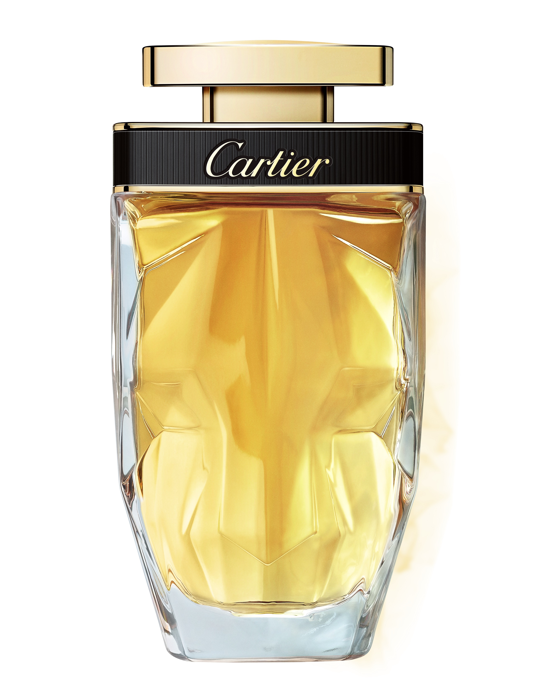
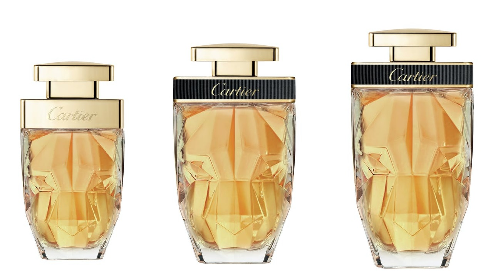
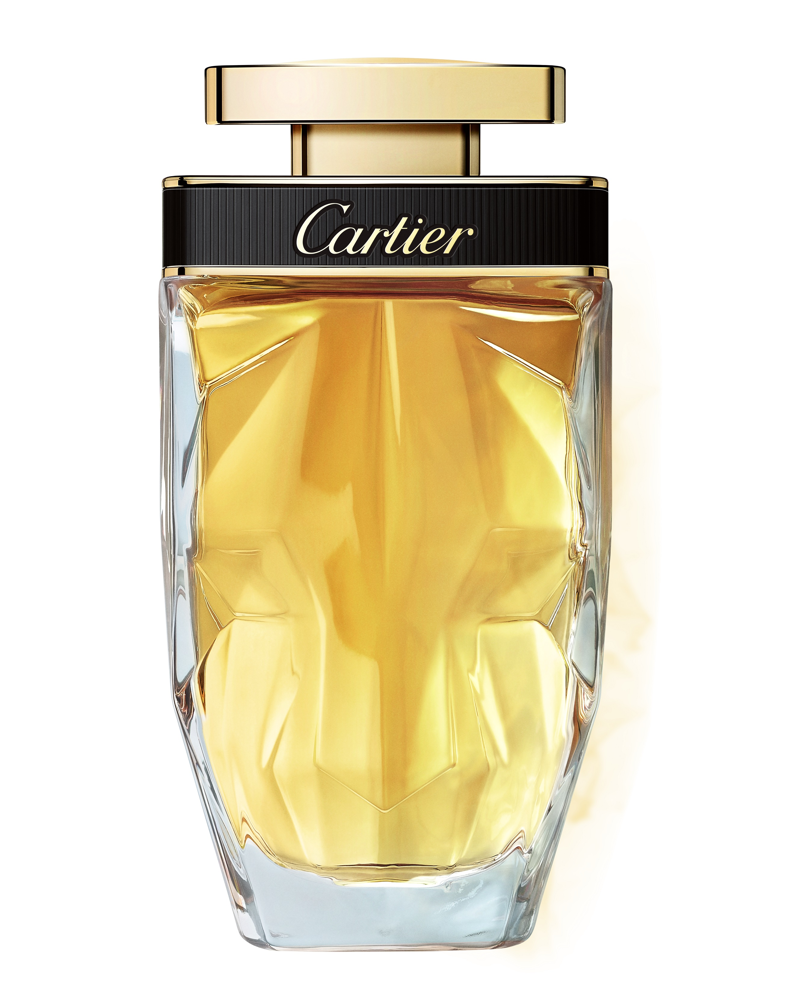
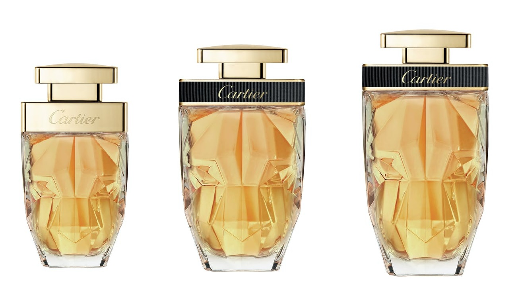

La Panthere Parfum от Cartier Образ пантеры, олицетворяющий женственность, загадочность и элегантность, присутствует во многих ювелирных и парфюмерных творениях дома Cartier. В 2014 году бренд выпустил аромат, названный в честь этого грациозного хищника - La Panthere, а в сентябре 2020 года в свет выходит новая версия этого знакового издания - La Panthere Parfum. Парфюмер дома Cartier, Матильда Лоран, создала более богатую и насыщенную интерпретацию современного шипрового аромата. Доминирующая нота оригинальной композиции, гардения, перешла в версию Parfum, но приобрела новое, более тёплое звучание за счёт абрикосовых оттенков османтуса. Парфюмер также удвоила дозу мускуса и смягчила шипровый характер, чтобы лучше передать густоту и мягкость меха пантеры.  Cartier La Panthere Parfum описывается как "кошачий" цветочный аромат, в основе которого - гардения, украшенная абрикосами, османтусом, пачули и шипровыми нотами.  Фирменный стеклянный флакон La Panthere, на поверхности которого проступает морда пантеры, в новой версии декорирован чёрными деталям. Аромат доступен в объёмах 25, 50 и 75 мл в формате Perfume. СКОРО В ПРОДАЖЕ!
Образ пантеры, олицетворяющий женственность, загадочность и элегантность, присутствует во многих ювелирных и парфюмерных творениях дома Cartier. В 2014 году бренд выпустил аромат, названный в честь этого грациозного хищника - La Panthere, а в сентябре 2020 года в свет выходит новая версия этого знакового издания - La Panthere Parfum. Парфюмер дома Cartier, Матильда Лоран, создала более богатую и насыщенную интерпретацию современного шипрового аромата.
Доминирующая нота оригинальной композиции, гардения, перешла в версию Parfum, но приобрела новое, более тёплое звучание за счёт абрикосовых оттенков османтуса. Парфюмер также удвоила дозу мускуса и смягчила шипровый характер, чтобы лучше передать густоту и мягкость меха пантеры.

Cartier La Panthere Parfum описывается как "кошачий" цветочный аромат, в основе которого - гардения, украшенная абрикосами, османтусом, пачули и шипровыми нотами.

Фирменный стеклянный флакон La Panthere, на поверхности которого проступает морда пантеры, в новой версии декорирован чёрными деталям. Аромат доступен в объёмах 25, 50 и 75 мл в формате Perfume.
СКОРО В ПРОДАЖЕ!